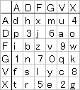

ADFGVX Cipher
Six letters, a 6×6 grid, letters AND digits — Painvin broke it in 48 hours
Why This Matters
ADFGVX combined Polybius substitution with columnar transposition — the first field cipher to use fractionation for military communication. Its breaking by Georges Painvin in 48 hours under extreme pressure helped halt Germany's 1918 Spring Offensive.

ADFGVX was introduced on June 1, 1918 — three days before Germany's Gneisenau Offensive. Adding V to the five-letter alphabet created a 6×6 grid that could encode all 26 letters plus the 10 digits 0-9. This was essential for military traffic involving coordinates, unit numbers, and dates.
The timing was catastrophic for Germany. Painvin broke ADFGVX within 48 hours, reportedly losing 15 pounds from the effort. His decryption revealed German supply movements and allowed Allied forces to reposition — contributing to the offensive's failure.
6×6 grid (A,D,F,G,V,X):
A D F G V X
A p h 0 q g 6
D 4 m e a 1 y
F n o f d x k
G r 3 c v s 5
V z 1 7 j 2 w
X b t i l u 8
Same two-step process: substitution → transposition
Painvin exploited the fact that multiple messages were sent with the same daily key — a procedural failure. By comparing messages of similar length and structure, identifying probable plaintext (dates, coordinates, unit designators), and applying differential analysis, he recovered both the transposition key and the substitution square. The effort nearly killed him from exhaustion.
| Concept from ADFGVX Cipher | Modern Evolution |
|---|---|
| Digits in cipher alphabet | Modern ciphers operate on bytes (0-255) — all digit values represented |
| Substitution + transposition combination | AES SP-network: Substitution-Permutation per round |
| Daily key changes | Session keys: modern protocols generate unique keys per session |
| Exhibit | 20 of 37 |
| Era | WWI · June 1918 |
| Security | Broken |
| Inventor | German Army Signal Corps |
| Year | June 1918 |
| Key Type | 6×6 Polybius square + columnar key |
| Broken By | Georges Painvin · 48 hours of continuous work |